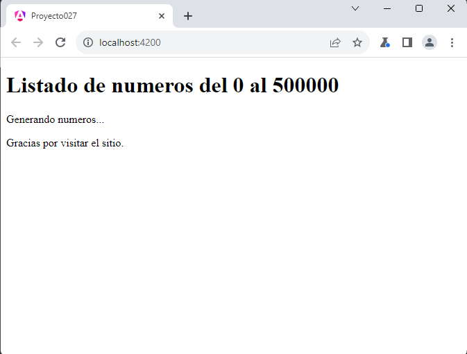
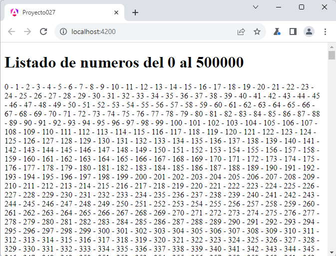

Las vistas diferidas es una nueva estructura que se puede emplear en la plantilla HTML y ha sido introducida a partir de Angular 17.
La vistas diferidas permite renderizar un bloque HTML, componente etc. una vez que la página se ha cargado por completo, solo faltando el o los bloques de código diferido.
La carga diferida tiene por objetivo mejorar la experiencia del usuario cuando interactúa con nuestra aplicación.
La sintaxis más elemental sin parámetros es:
@defer {
aquí disponemos el bloque que se va a renderizar luego que se haya cargado toda la página
} @placeholder {
aquí disponemos el bloque que debe renderizar inmediatamente
}
El bloque @placeholder es opcional pero nos puede ser de mucha utilidad para informar al usuario que se va ha renderizar en dicho lugar, por ejemplo podemos reservar un área de la página donde se mostrará un gráfico estadístico que requiera datos de un servidor web.
Crear una página con un título, seguidamente muestre los números del 0 al 500000, al final de la página mostrar un pié página con un mensaje.
Como podemos imaginar la generación y renderizado de la página va a ser lenta, debido a su tamaño. Lo más conveniente es que se muestre la página con un mensaje informando al usuario que se está generando la lista de números y tenga un poco de paciencia. Pasemos a crear el proyecto:
ng new proyecto027
En la clase de la componente 'app.component.ts' creamos un arreglo de 500001 elementos con los valores comprendidos entre 0 y 500000:
import { Component } from '@angular/core';
import { RouterOutlet } from '@angular/router';
@Component({
selector: 'app-root',
imports: [RouterOutlet],
templateUrl: './app.component.html',
styleUrls: ['./app.component.css']
})
export class AppComponent {
numeros = [...Array(500001).keys()];
}
Es importante recordar en JavaScript y por lo tanto aplicable en TypeScript para generar en forma concisa el arreglo:
En resumen, después de ejecutar este código, la variable numeros contendrá un array con los números del 0 al 500000.
Ahora veamos como creamos el bloque que generará la lista de números en forma diferible, pasamos a codificar en el archivo app.component.html:
<h1>Listado de numeros del 0 al 500000</h1>
@defer {
<p>
@for(num of numeros;track num) {
{{num}} -
}
</p>
}
@placeholder {
<p>Generando numeros...</p>
}
<p>Gracias por visitar el sitio.</p>
Podemos ejecutar la aplicación y ver que inmediatamente se carga la página casi por completo, pero queda pendiente el bloque @defer:
Mientras no se ha resuelto el contenido del bloque @defer se muestra el contenido del bloque @placeholder.
Luego de algunos segundos, dependiendo de la velocidad de la computadora se remplaza el contenido del @placeholder por el contenido del bloque @defer, en nuestro ejemplo mostrando la lista de números en pantalla :
Podemos probar esta aplicación en la web aquí.
Sin vista diferida podemos comprobar que la página tarda varios segundos antes que se muestre en el navegador, lo cual genera una experiencia de usuario muy pobre. Puede modificar y probar el código sin el bloque de vista diferida:
<h1>Listado de numeros del 0 al 500000</h1>
<p>
@for(num of numeros;track num) {
{{num}} -
}
</p>
<p>Generando numeros...</p>
<p>Gracias por visitar el sitio.</p>
Seguramente sin vista diferida deberíamos utilizar otro algoritmo para que muestre parte de la página hasta que se muestre la lista de números.
Si utilizamos una versión de Angular anterior a la 17, un algoritmo posible es el siguiente:
import { Component, OnInit } from '@angular/core';
import { CommonModule } from '@angular/common';
import { RouterOutlet } from '@angular/router';
@Component({
selector: 'app-root',
standalone: true,
imports: [CommonModule, RouterOutlet],
templateUrl: './app.component.html',
styleUrls: ['./app.component.css']
})
export class AppComponent implements OnInit {
numeros = [...Array(500001).keys()];
lista = 'generando la lista...';
ngOnInit() {
setTimeout(() => {
this.lista = this.numeros.join('-');
}, 0);
}
}
OnInit es una interfaz que proporciona el método ngOnInit, que se ejecuta cuando la componente se inicializa.
El método ngOnInit() se llama después de que la componente ha sido inicializada. En este caso, se utiliza para actualizar la propiedad lista después de un breve retraso, simbolizado por setTimeout. Este enfoque se utiliza para mostrar el mensaje 'generando la lista...' antes de que la lista completa de números se procese y actualice en la vista.
Y su plantilla queda con el siguiente código:
<h1>Listado de numeros del 0 al 500000</h1>
{{lista}}
<p>Gracias por visitar el sitio.</p>
La vista diferida nos permite implementar un código más legible y veremos más adelante que tiene otras ventajas.